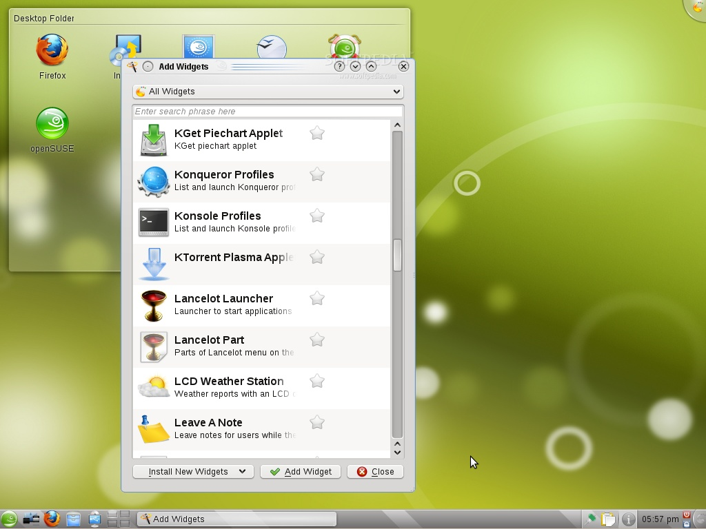
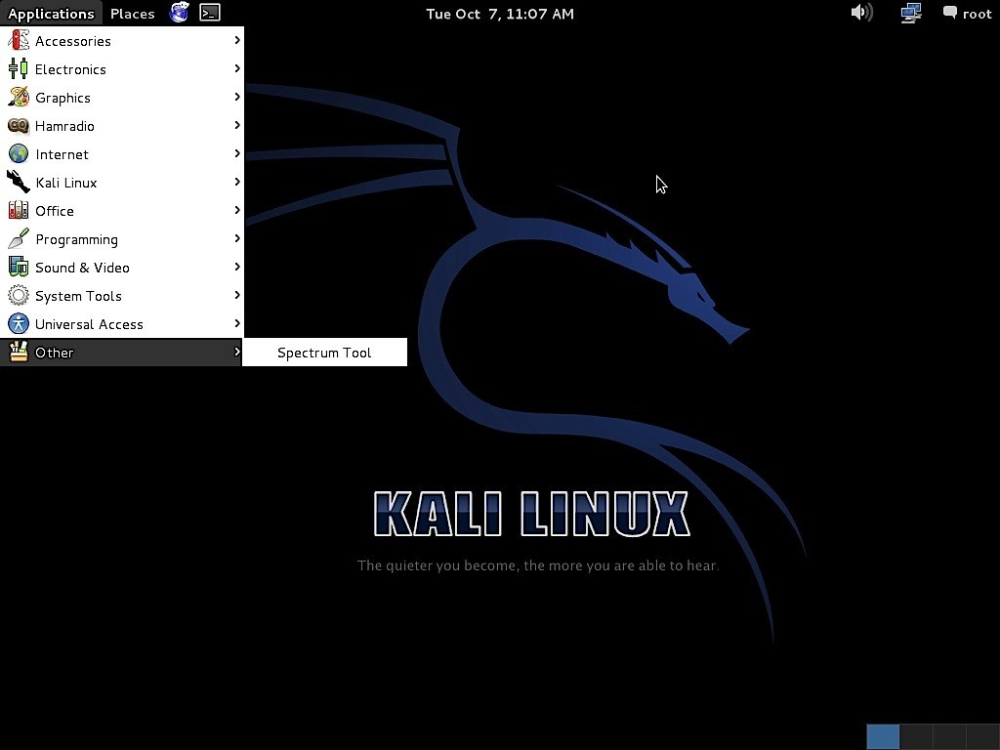
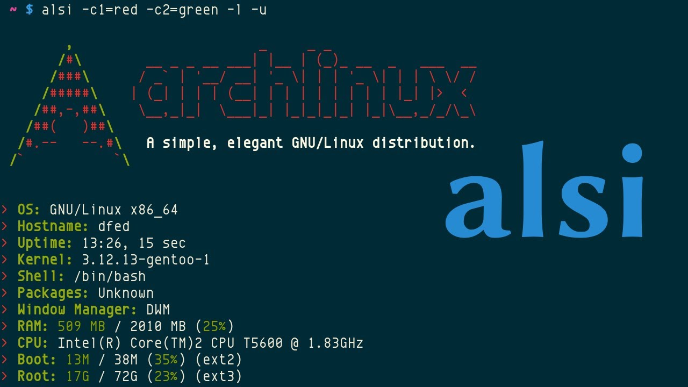
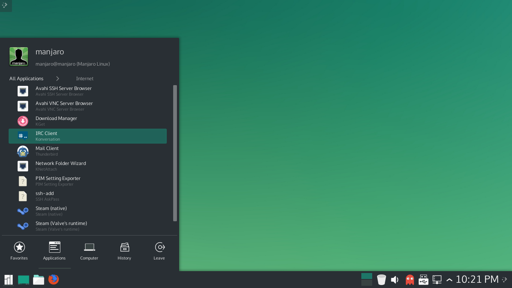
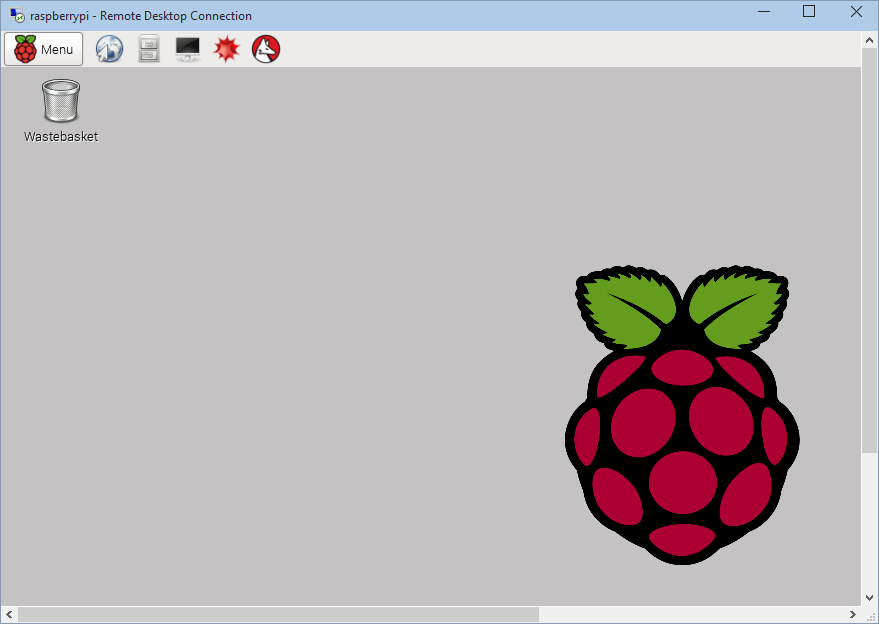
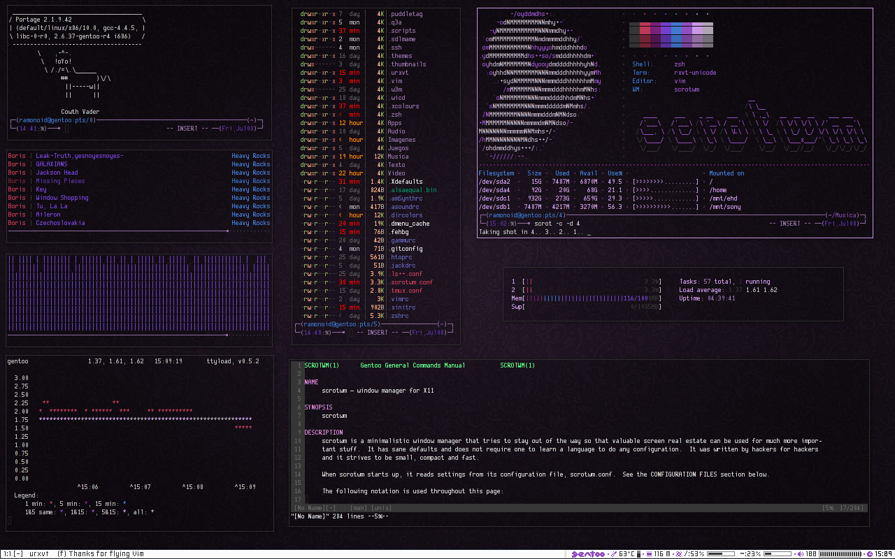
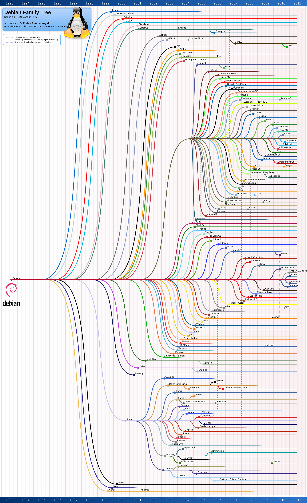

Agenda
- Was ist Linux?
- Woher kommt Linux?
- Distros
- Vorteile
- Nachteile
- Einsatzgebiete
Was ist Linux?
Woher kommt Linux?
- Linus Torvalds
- Ursprünglich Forschungsprojekt
- GNU/Linux
Distros
Distros







Vorteile
- Stabilität
- Performance
- Flexibilität
- Resourcenschonend
Nachteile
- Treiberkompatibilität
- User Experience
- Gaming
Einsatzgebiete
- Server
- Smartphones
- Embedded
I’m doing a (free) operating system (just a hobby, won’t be big and professional like gnu) for 386(486) AT clones.
- Linus Torvalds (25 August 1991)